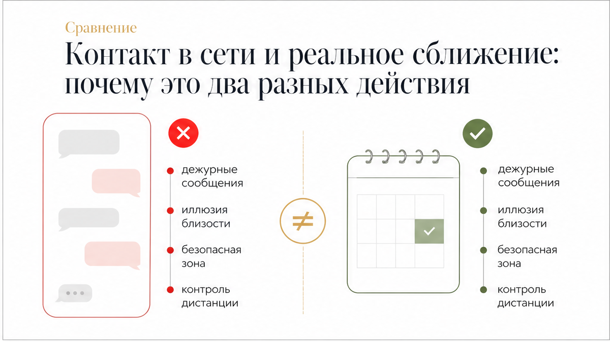
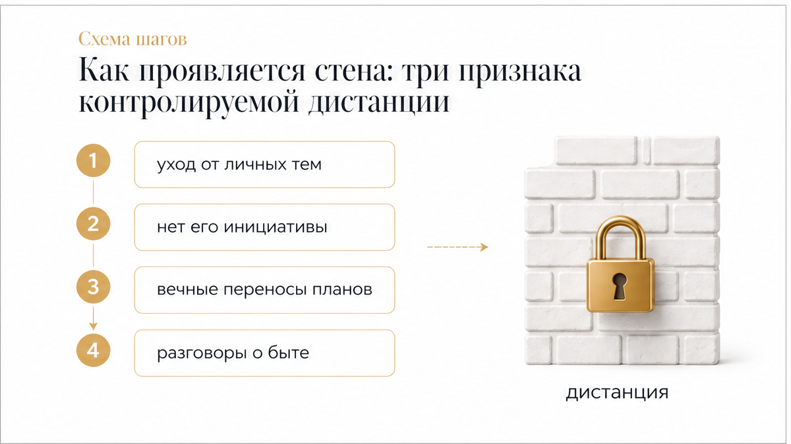
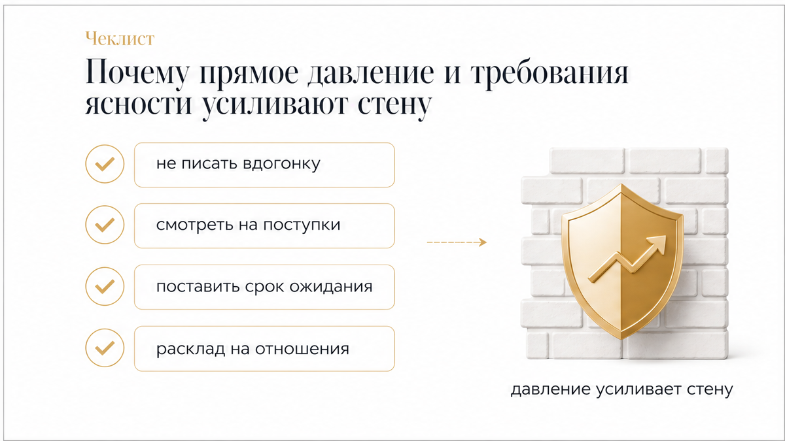

Экран смартфона загорается сообщением от него: дежурный вопрос о делах, смешной мем или быстрый ответ на твою историю. Диалог не затухает, ответы приходят без пауз, контакт кажется лёгким и привычным. Но как только разговор подходит к чему-то настоящему — предложению встретиться на выходных, тёплому признанию или попытке понять, что между вами происходит, — тональность мгновенно меняется. Он ловко переводит тему на работу, бросает уклончивое «спишемся ближе к делу» или зависает в тишине на несколько часов. Мужчина остаётся в поле зрения, но любой шаг к реальной близости упирается в глухую невидимую стену.
Сразу к делу: когда мужчина удерживает диалог, но блокирует реальное сближение, бессмысленно выискивать скрытый смысл в его смайликах. Карты помогают увидеть истинную динамику отношений без иллюзий:
Чтобы быстро прояснить ситуацию, разложи карты на отношения: открой 3 бесплатных расклада в боте Макс (выбирай экспресс-триплет или «Крест») или запусти бота в Telegram, если читаешь статью на сайте.

Главная ловушка такого общения — иллюзия, что отношения продолжают двигаться вперёд. Он не исчезает с радаров, не обрывает связь и не демонстрирует открытого холода. Человек регулярно мелькает в уведомлениях, ставит реакции и создаёт стойкое ощущение открытой двери.
Но дежурный обмен репликами в чате и готовность впустить тебя в свою реальную жизнь требуют принципиально разного уровня вложений. Присутствие на связи часто становится для мужчины идеальным способом держать дистанцию: ты остаёшься под рукой, в зоне его контроля, но он не берёт на себя никаких обязательств и не делает ни шагу за пределы комфортной зоны.

Искусственная дистанция при внешне тёплом общении всегда выдаёт себя через три характерных маркера:

Когда неопределённость затягивается на недели, первая реакция — потребовать прямого ответа здесь и сейчас. В ход идут эмоциональные разговоры, попытки пристыдить за холодность или прямое выяснение отношений в лоб.
Но навязанный штурм почти никогда не приводит к открытости. Мужчина, который сознательно выстроил дистанцию, воспринимает любые требования ясности как попытку взломать его личные границы. В ответ он не раскрывает душу, а лишь глубже уходит в глухую оборону: паузы между ответами становятся длиннее, а тон переписки — ещё более формальным.
Чтобы перестать тратить нервы на пустые ожидания и вернуть себе устойчивость, используй чёткий пошаговый алгоритм:
Ждать, пока мужчина решится на сближение, находясь в удобном для него режиме переписки — пустая трата твоего ресурса и душевных сил. Карты таро не залезают в чужие мысли, но наглядно показывают истинный баланс сил в паре, скрытые причины его осторожности и реальный потенциал ваших отношений.
Заходи в бот Макс на 3 бесплатных расклада или открой бота в Telegram для читателей сайта — разложи карты за пару минут и пойми, куда двигаться дальше.
Также можно разобрать ситуацию в приложении ВКонтакте или открыть приложение в MAX.